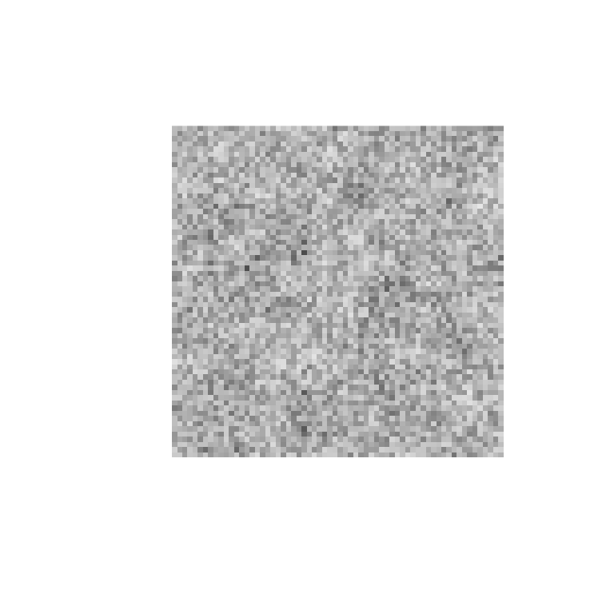

rcicr implements reverse correlation image
classification, a technique from psychophysics for visualizing
internal mental representations (for example, of faces). It works in two
stages:
- Stimulus generation: a base image (e.g. a face photo) is combined with random visual noise to create pairs of stimuli — an “original” and its pixel-inverted counterpart — for a two-image-forced-choice (2IFC) task. Participants pick, on each trial, whichever of the pair looks more like some target category (e.g. “trustworthy”, “happy”).
- Classification image (CI) computation: after data collection, the noise patterns from stimuli where the participant chose the “original” are averaged together (and subtracted for stimuli where the “inverted” version was chosen). The result — the classification image — visualizes which visual features were systematically associated with the participant’s choices.
This vignette walks through both stages using a tiny synthetic
example. For the full treatment — several participants, scaling choices,
z-maps and informational value — see
vignette("reverse-correlation-walkthrough", package = "rcicr").
For example datasets and analysis scripts, see rcicr_examples.
1. Generate stimuli
generateStimuli2IFC() needs a square base image. Here we
generate a synthetic grayscale image instead of using a real photo,
purely so this vignette is self-contained; in a real study you would
pass the path to your base face photo(s) instead.
set.seed(42)
base_face_path <- tempfile(fileext = ".png")
png::writePNG(matrix(runif(64 * 64), 64, 64), base_face_path)Now generate stimuli for a small task: 20 trials, one base image, at
a small image size (kept small here so the vignette builds quickly — a
real study would typically use img_size = 512 and several
hundred trials, following Dotsch & Todorov, 2012).
stimulus_path <- tempdir()
generateStimuli2IFC(
base_face_files = list(face = base_face_path),
n_trials = 20,
img_size = 64,
stimulus_path = stimulus_path,
seed = 1,
ncores = 1,
save_as_png = FALSE # set to TRUE to also write stimulus PNGs to stimulus_path
)
rdata_file <- list.files(stimulus_path, pattern = "\\.Rdata$", full.names = TRUE)[1]This writes an .Rdata file to stimulus_path
containing the random noise parameters used for every trial.
That file is the only link between stimulus generation and CI
computation — keep it, since every analysis function below
needs it via the rdata argument.
2. Collect (or, here, simulate) responses
In a real experiment, this is where you would run the 2IFC task and
record which image (original = 1, inverted =
-1) each participant chose on each trial. Since this
vignette has no real participant, we simulate random responses instead —
a real analysis would never do this, as random responding contains no
signal and yields an uninformative classification image.
3. Compute the classification image
generateCI() looks up the noise parameters for the
stimuli that were shown, weights them by the responses, and averages
them into a single classification image.
ci <- generateCI(
stimuli = 1:20,
responses = responses,
baseimage = "face",
rdata = rdata_file,
save_as_png = FALSE
)
names(ci)
#> [1] "ci" "scaled" "base" "combined"ci$ci is the raw noise, ci$scaled is that
noise rescaled for display (see ?generateCI for the
available scaling methods — the default, 'independent',
picks the lowest scaling constant that avoids clipping this particular
image), and ci$combined overlays the scaled noise on the
base image.
image(ci$combined, col = gray.colors(256), axes = FALSE, asp = 1)
Because the responses above were random rather than real data, this classification image is just noise — with real experimental data, systematic patterns tied to participants’ choices would emerge here instead.
Next steps
-
batchGenerateCI()/batchGenerateCI2IFC()compute one CI per participant or condition from a data frame, optionally followed byautoscale()to rescale a whole batch of CIs consistently so they stay visually comparable. -
computeInfoVal2IFC()computes an “Informational Value” (a z-score-like measure of how much signal is in a CI) by comparing it to a simulated null distribution. -
plotZmap()visualizes which regions of a CI carry statistically reliable signal.
See each function’s help page (e.g. ?generateCI,
?batchGenerateCI) for further options and runnable
examples.